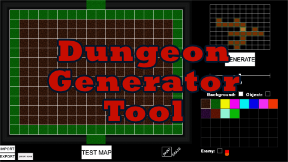

This mini-game is a tile-based, turn-based strategy. You and the enemy are given two units and your objective is to destroy the other team's units.

Developed with Java for Android, this app is designed as a simple level editor to build and test environments with touch controls.

An asychronous multiplayer game of hide and seek designed for 2-4 players. Players are split into two teams, Seekers and the Hider.

In development.
A tool developed to assist in the creation of roguelike games.

Puzzle platformer with the use of simple custom physics.